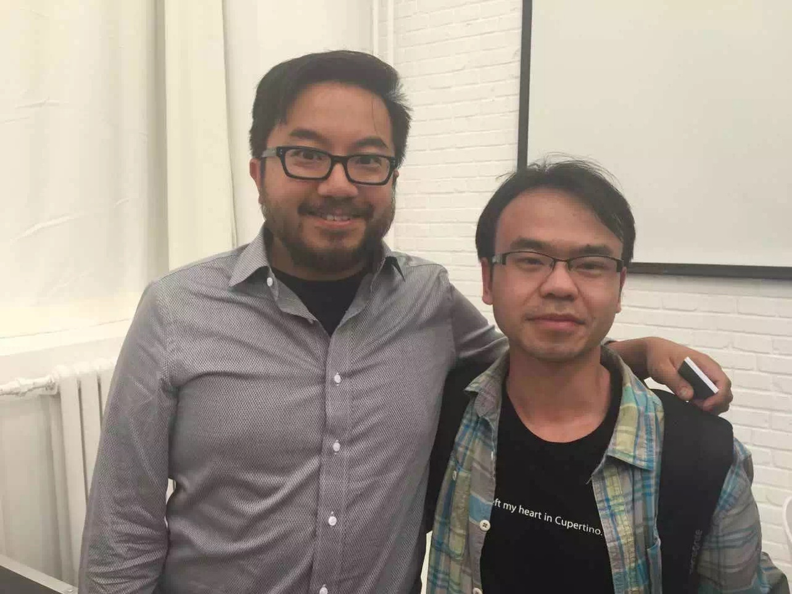

J
.
Tian
Investing
Writing
Building
Reading
Contact
中文
John Tian
·
Beijing
John Tian
Investing and building globally
.
01
Investing
投资
Stage
Geography
Notable
How to reach me
02
Writing
写作
The Signal
↗
readthesignal.co
投资实习所 / Memo
↗
WeChat newsletter · 微信公众号
03
Building
创造
arr.club
↗
●
LIVE
vidsizer.com
↗
●
LIVE
vcsmemo.com
↗
IN PROGRESS
04
Reading
阅读
Book · sample
Book · sample
Essay · sample
05
Background
背景
2024 — now
2020 — now
2021 — 2022
2019 — 2021
2014 — 2018
2012 — 2014
2005 — 2009
06
Personal
生活

07
Contact
联系
EMAIL
johntian2015@gmail.com
LINKEDIN
linkedin.com/in/johntian